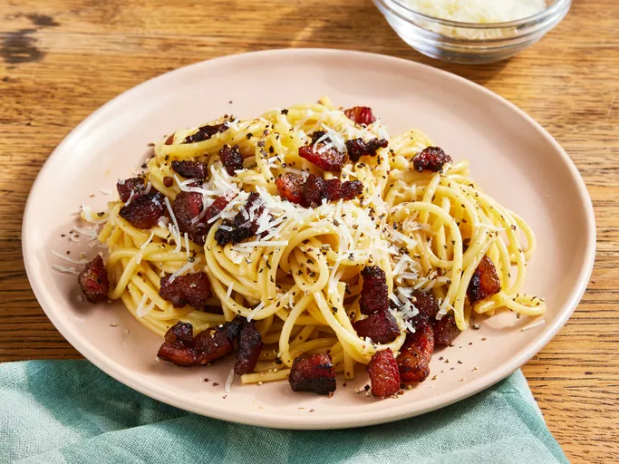

Pâtes à la carbonara

Description
Plat de pâtes avec jaunes d'oeufs, un peu d'eau de cuisson et de pecorino râpé. On y ajoutera du poivre noir ainsi que des lardons ou de la pancetta.
En 2012, le Club della carbonara, créé en 1998, aurait proposé une recette unique de ce plat afin de clore les débats qui entourent sa préparation. [source : Wikipedia].
Ingredients
- Oeufs
- Lardons
- Pecorino
- spaghetti
- Poivre noir
Etapes
- Porter l'eau à ébulition.
- Faites chauffer les lardons dans une poêle en vue de les faire rôtir.
- Pendant que l'eau bout, mélanger dans un bol les oeufs, le pecorino et le poivre noir jusqu'à obtenir une préparation crémeuse.
- Cuire les pâtes et faire cesser la cuisson des lardons dès qu'ils sont bien rôtis.
- Ajouter un peu d'eau de cuisson à la préparation aux oeufs.
- Egoutter les pâtes et servir.